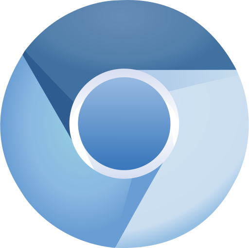
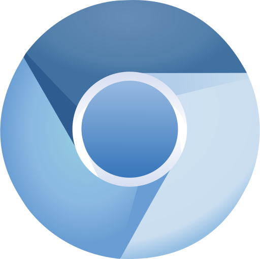
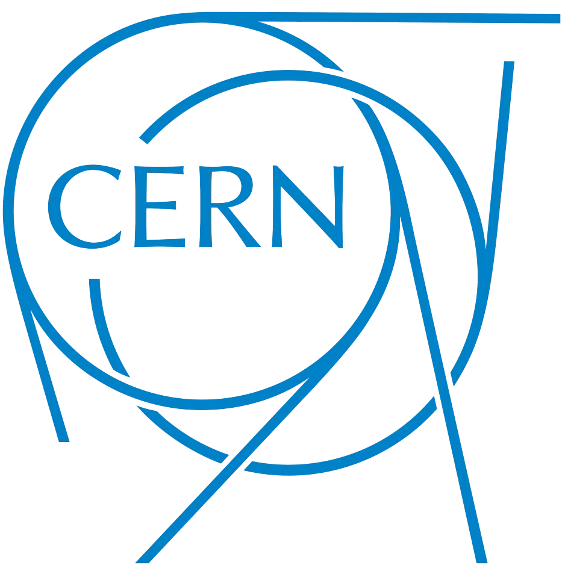
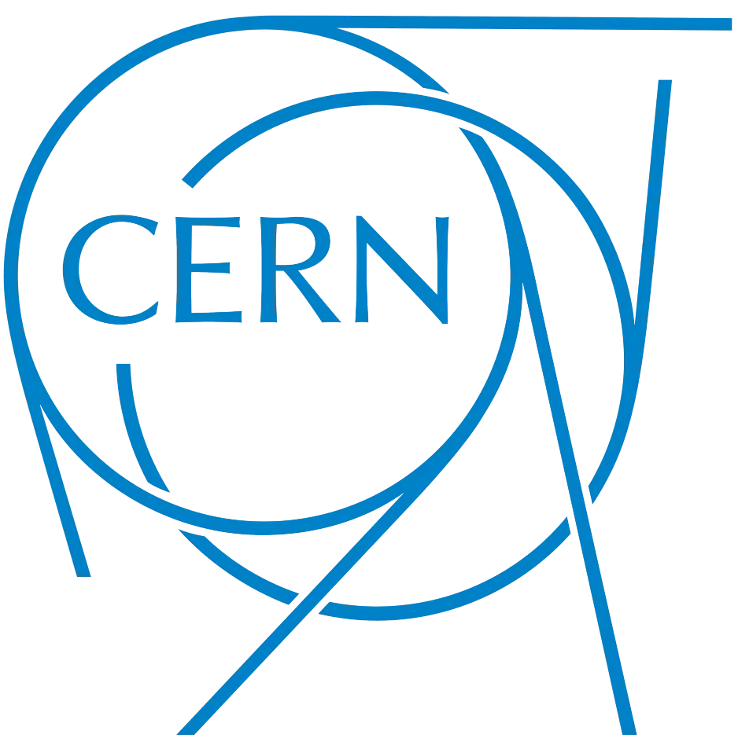
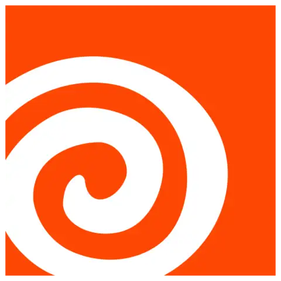
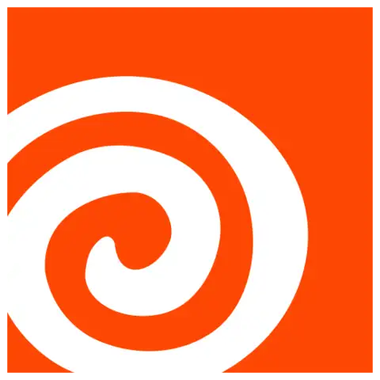
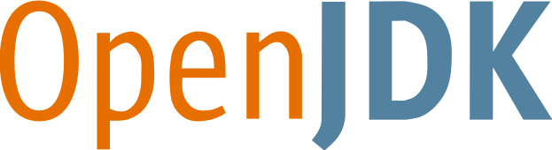
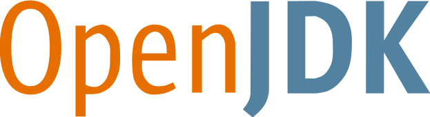

Chapter 1: Introduction
Applied Modern C++ is a series of blog posts—written as if they were a part of a book—dedicated to helping you learn how to write programs using C++. Perhaps you’re taking a class on C++ programming at university, or are needing to learn how to use C++ for your next team, or are simply wanting to learn a new language to see how things are done in another programming language. Whatever the case may be, welcome to the world of C++!
Chapter table of contents
- Chapter 1: Introduction
Objectives and outcomes
| Objective (you will develop) | Outcome (you will be able to) |
|---|---|
| understanding of what C++ is |
|
| appreciation for the versatility of C++ |
|
Acknowledgements
Thank you to Sy Brand and Hana Dusíková for providing feedback on early drafts of this blog.
What is C++?
A simple web-search for “what is C++?” will reveal a zillion different answers to the question. Most of them are correct from a certain point of view, so to get to the point, here’s a distilled definition:
C++ is a programming language that prioritises performance by letting you choose appropriate abstractions for your situation.
It achieves this because it’s built upon two philosophical design pillars. The first is that there shouldn’t be any room for another language between C++ and the hardware (except assembly). The second is that abstractions should have as little a cost as possible: preferably none, if we can get away with it.
Is C++ still worth learning?
Every year, people either ask or try to answer this question. It’s an interesting question: your time is valuable, and you probably want to know whether it’s worth investing in this particular endeavour. If nothing else, like with most programming languages, taking the time out to learn C++ will broaden your perspective on how to write programs. To really answer the question, we must first ask another important question:
What can I use C++ for?
Once we answer this question, we should be in a position to answer the original question. Below are a handful of well-known products that C++ has been used to develop, some of which you probably know.
 


 



 


 


The list of products above are just a taste of the domains C++ is used in. C++ is also used in driver software, audio, telecommunications, embedded SoCs, finance, and security software. These are all enthralling applications of C++, but, my favourite examples of C++—by far—are out of this world. That’s right, C++ is used in space too! The James Webb Space Telescope and the Mars Rovers all have components that are written using C++.
C++ is applicable to so many domains because it’s able to run on pretty much any computer. We’ll look at that in detail later on.
We’ve seen around twenty unique domains so far, and we’re not even close to scratching the surface on how many use-cases C++ has in the real world. So, yes, I think you should learn C++ regardless of which year it is. You’ll definitely be able to find something that you can do using C++.
Who this series is written for
This series targets programmers with at least a year’s experience with programming. Teaching complete novices is delicate work, backed by over four decades of peer-reviewed research into computer science education: I’m not qualified to teach that level.
C++ is not a programming language for complete novices
Computer science education experts—those who have conducted peer-reviewed research—have identified that developing the ability to think in terms of algorithms is one of the first things that one should learn when starting to write code. Most industrially-used programming languages have a lot of things that will needlessly frustrate aspiring programmers during a critical stage in their development. This is true of C++, but also applies to other popular languages such as C, C#, Java, Rust, and Haskell.
If you’re just starting out, I suggest you first learn Python, or JavaScript; and come back in a year’s time. However, if your heart’s set on learning C++ first, you are still welcome: just be prepared to spend a fair amount of time researching topics that will be considered assumed knowledge.
Back to experienced programmers
You’ll need at least a few programs under your belt. Other than that, no experience is necessary. You don’t need to be well-versed in computer science or software engineering: everything we need will be discussed as it becomes relevant.
Do I need to know C before learning C++?
Plugging this into Google will give you a host of people saying that because C++ is based on C, you should learn C first. This is well intended advice, but it’s not the correct way to go about learning C++. Just like we don’t start learning to speak contemporary English by starting with Old English, Middle English, or even Early Modern English, it makes little sense to learn C++ by starting with C. Well-written C programs look vastly different to well-written C++ programs, and so learning C for the sake of learning C++ will just have you writing lower quality code in both C and C++.
There are definitely good reasons to learn how to write programs in C, but learning it in order to learn how to use C++ is not among them.
Which version of C++ are we learning?
We presently use C++20, though this will likely change over time.
Series structure
Learning C++ isn’t a small task, and so I’ve broken this series up to help you digest the content. If you were taking this as a third-year university course, you’d probably need around twelve or fifteen weeks with six hours of classes.
There are two main sections: a section on using abstractions, and one on building abstractions. Each section is further divided into two modules, and each module will be comprised of many chapters.
Section 1: Using abstractions
- Module 1 is focussed on introducing you to the fundamentals of writing programs using C++. The goal isn’t to show you a bunch of random C++ features in isolation, but rather to get you to a functional level of programming. By the end of Module 1, you’ll be able to write simple programs using C++.
- Module 2 aims to get you acquainted with library features that aren’t fundamental, but are nonetheless important for you to start writing non-trivial programs.
Section 2: Building abstractions
- Module 3 begins to reveal the inner workings of how abstractions are made. Most interesting C++ programs require programmers to build their own abstractions, so we’re finally going to get stuck into some of the more common techniques that C++ programmers use.
- Module 4 pulls the curtain back even further, revealing more abstraction techniques than its predecessor.
There’s a rough table of contents, if you’d like to see what’s ahead, but only Module 1 is seriously fleshed out.
Chapter structure
Objectives
At the start of each chapter, there will be a list of objectives for the chapter that outline where you’re expected to develop. The purpose of these objectives is to communicate what the chapter’s goals are, and what it hopes you’ll get out of the chapter.
Outcomes
Following the list of objectives, you’ll be presented with a table of outcomes. This table will help you map specific verbs to each objective, so that you can quantify that you’ve met the objectives. For example, an objective such as
“understands what kind of a language C++ is”
is a fairly lofty objective because you have no way of determining if you do understand what kind of language C++ really is. It’s great at the high level, but terrible at the assessment level. To ground the objective in reality, we map each objective to one or more outcomes, such as
describe the design pillars upon which C++ rests
Now we have some sort of schema for determining whether or not someone understands what C++ is. The verbs that hold pedagogical meaning are italicised, and are defined by the New South Wales Education Standards Authority’s Glossary of Key Words.
A note to teachers and experienced programmers
One of this series’ underpinning philosophical points is to slowly expose readers to content. It often does this by simplifying complex topics so that they’re digestible. If something seems incomplete or slightly off, then it’s very likely that we’re going to be revisiting the material in a later chapter in far more detail. While it’s likely that this series does contain mistakes, please make sure that this isn’t a simplification for the sake of the reader before correcting or “filling in the gaps”.
The C++ community
If you’re looking for a group of people who are enthusiastic about C++, then #include <C++> should be your first stop. Not only is the group into C++, but they’re also about promoting kindness in professional workspaces, diversity, and inclusivity. Many groups are under-represented in software engineering, and particularly in C++ spaces: we’d like to change that. One of the coolest things that the group does is to sponsor people who are a part of under-represented groups to go to big C++ conferences.
For most people, the day-to-day advantage of #include <C++> is the Discord server, where you can talk about C++, diversity, and lots of domain-specific topics. There’s even got a section for C++ beginners!
Resources
cppreference is an unofficial, but extremely useful reference on standard C++. We’ll be consulting it for documentation.
Since Module 1 is about grasping the basics, we’ll be using the online editor Compiler Explorer. Compiler Explorer is an extremely cheap buy-in that doesn’t involve you investing loads of time setting up a development environment, just to write your first few programs. Instead, we’ll get you up and running with minimal assembly; once you’re at a functional stage, we’ll sink some time into installing and exploring our toolchain in some detail. Each chapter will have its own Compiler Explorer link, and you should use it to ensure that you have the correct setup for that chapter.
How to succeed with learning C++
Let’s chat about how to succeed with learning C++. Peer-reviewed research has identified that people learning a new programming language tend to rely on features that feel familiar from previous programming languages; even if those features aren’t the best way to write programs in the new language. My own experience with teaching C++ to Java programmers at a university serves as additional evidence to those researchers’ point. To succeed in learning C++, you really do need to get to know C++ and be its friend, rather than an acquaintance that you only see at the shops every now and again. As such, try and challenge yourself to write C++ only using the features that we’ve discussed, and don’t use anything that might “feel” familiar from your prior experience.
Most chapters will have a set of quzzies and exercises for you to complete, so that you’ve got a way to practice what we’ve covered. It’s important that you practice writing C++ at least a few times a week so that you meet the chapter objectives. It’s also important that you complete more than just the examples that we work through, because those examples are only a demonstration.
Another tip for success is learning how to ask for help. This is an important skill that is rarely taught, and people often think they already know how to ask for help, so they don’t actually master this skill. If you take the time out to learn this from people who regularly offer help, you’ll find that your questions will be answered more quickly, and more richly.
Once you’re close to the end of the series, you should start to read other people’s C++ code. We read code far more often than it’s written, and different programmers have different ways of approaching problems. Most of them won’t have read this content, and will thus be writing code that’s influenced by other means.
Finally, remember to take breaks and look after yourself. Go out with friends, practice another hobby, study for another class. Routinely eat healthily, drink water, and get a good night’s sleep. I’ve been battling burnout for the past few years due to perpetually programming, and many of my friends who are also in their 20s and 30s are facing similar issues. Mixing stuff up and taking care of yourself is a good way to minimise burnout.
Feedback
If you’d like to provide feedback regarding this series, please file an issue on GitHub.
If you’re interested in reading future chapters, subscribe to my RSS feed to receive a notification at the time of publication. If you’d previously subscribed to my feed on my old website (www.cjdb.com.au), please be sure to note the new domain!
Summary
In this chapter, we demistified C++ from afar, calibrated the target audience of this text, and outlined how you can maximise your chances for success when learning a new programming language.